08:00
FD234 / KHH → NRT
抵達後跟團完成入境、領行李、集合上車。
TOKYO–HAKONE / 2026.10.23—10.28
HAKONE / TOKYO / TOKYO-III
GROUP TOUR / ARRIVAL DAY
08:00 高雄出發 → 12:55 成田抵達 → 新倉山淺間公園 → 富士五湖／箱根／石和溫泉區飯店。今天不塞額外支線。
抵達後跟團完成入境、領行李、集合上車。
核心任務只有一件：先上展望區拍「忠靈塔 × 富士山」。時間有餘裕再補神社與鳥居。
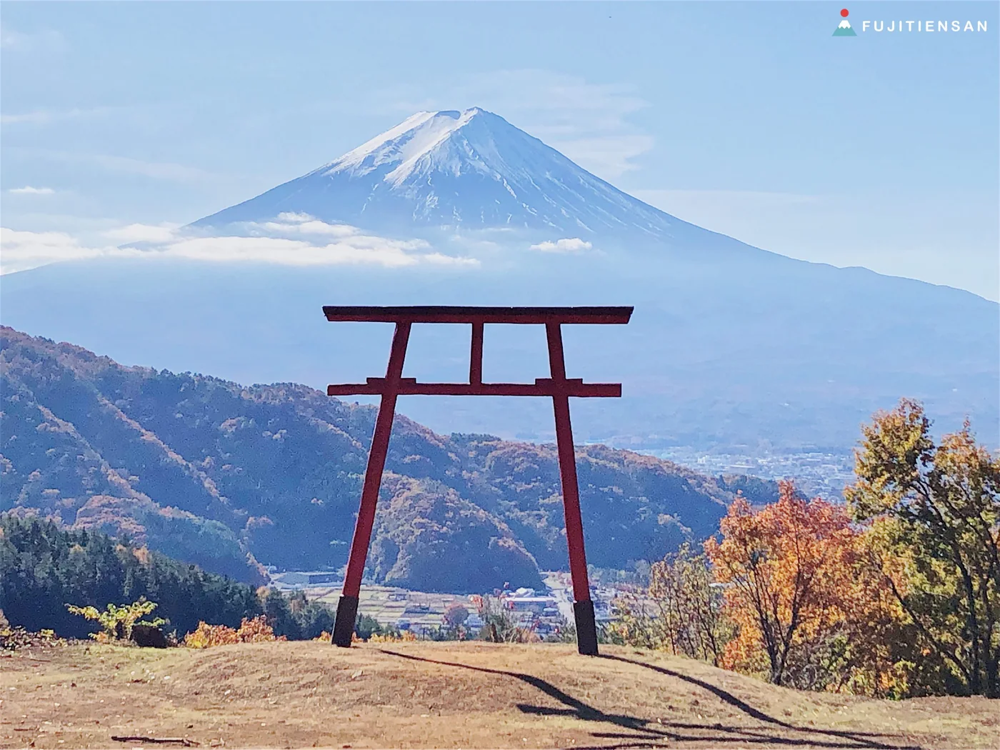
旅行社安排晚餐與住宿。實際飯店確定後再補便利商店、超市與館內設施。
PHOTO / STREET FOOD / SHOPPING
大石公園 → 忍野八海 → 御殿場 Premium Outlets。忍野只走核心小圈；Outlet 先吃 Shake Shack，再集中逛想買的店。
10 月下旬主拍紅色掃帚草 × 富士山；先拍照，再視集合時間決定 Natural Living Center。
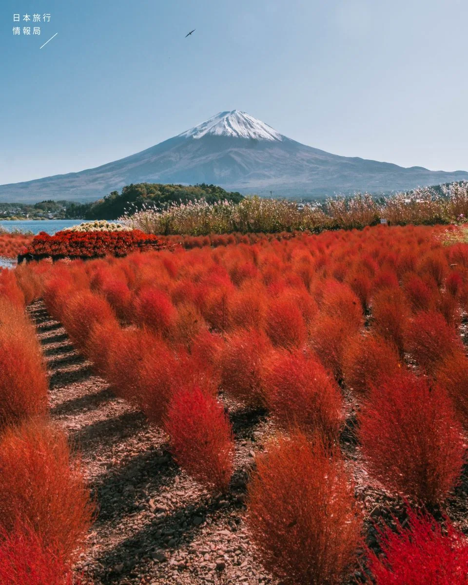
不用收集八池。主線就是「湧池 → 茅草屋／富士山照片 → 草餅 → 烤魚 → 集合」。
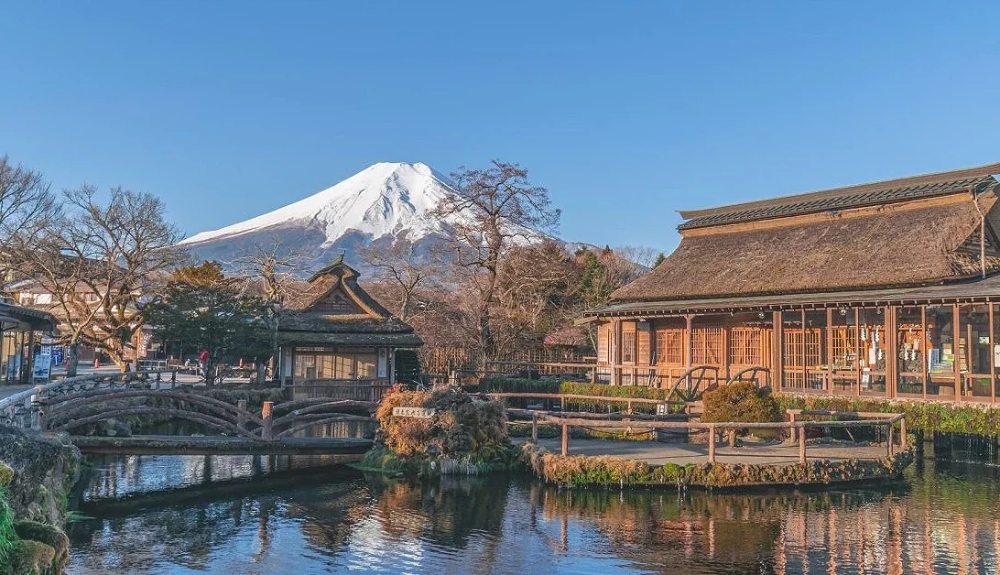
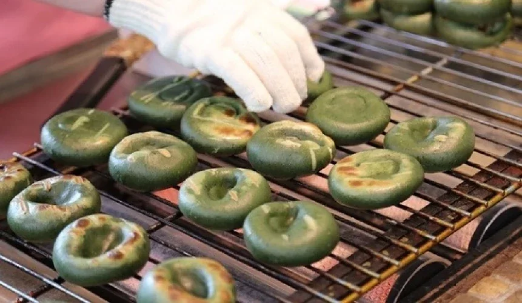
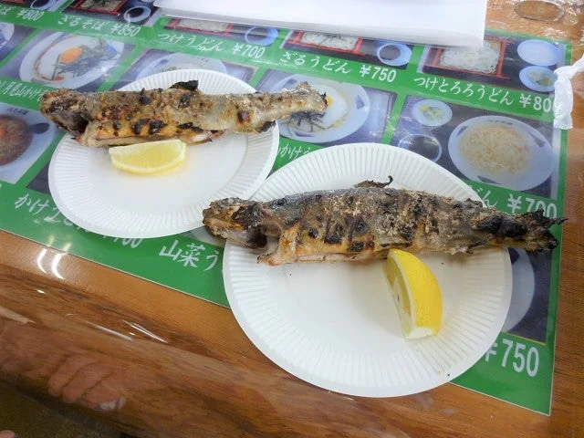
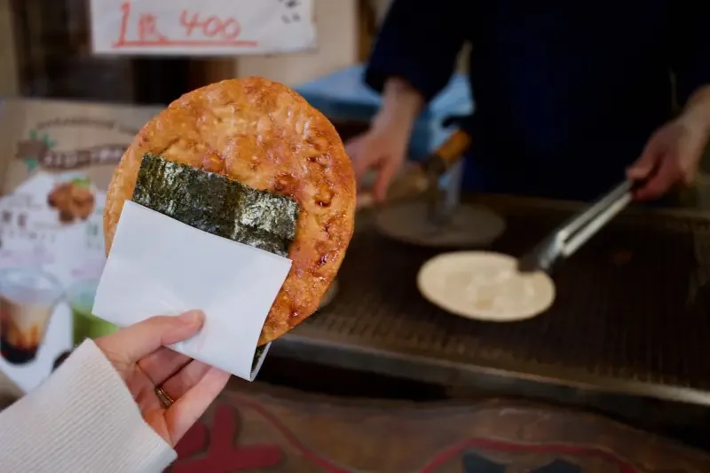
御殿場不是百貨「樓層制」，官方用 ZONE + 店舖區畫號 找店。網站直接記區畫號，比記樓層更有用。
晚餐為旅行社安排飯店自助餐。飯店確定後再補附近便利商店／超市。
第三新東京市實景巡禮
以火山地貌本身為主：荒地、白煙、裸露山體；EVA 只當彩蛋，不特地追動畫構圖。
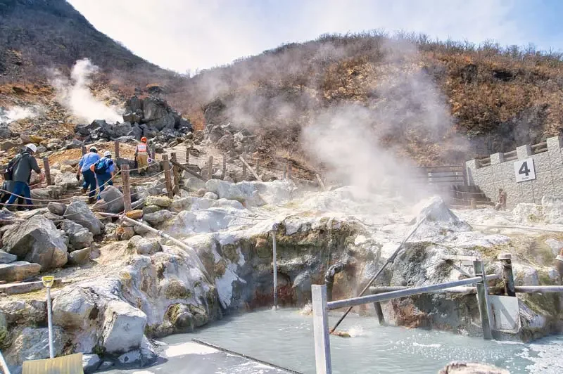
這站改以「湖面 × 富士山 × 秋色」為主；EVA 地理意象只作 BONUS。
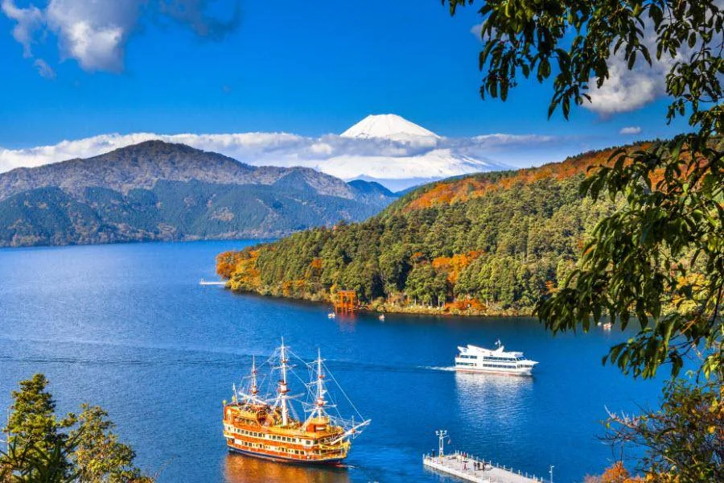
2×～3× 長焦，把山體壓到湖面後方。不要人物，讓地形成為主角。
不把它們排成新的景點；抵達台場後依團體下車位置與時間順手收集。獨角獸鋼彈已於 2026/8/31 結束展示，不再列入任務。
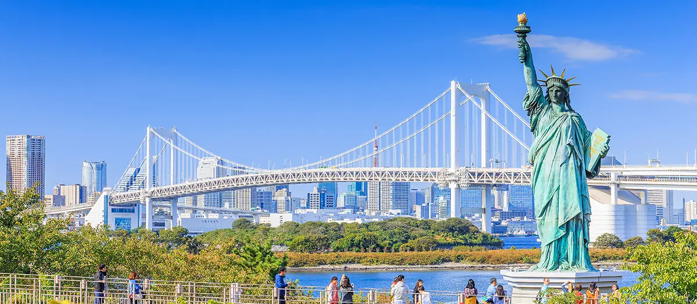
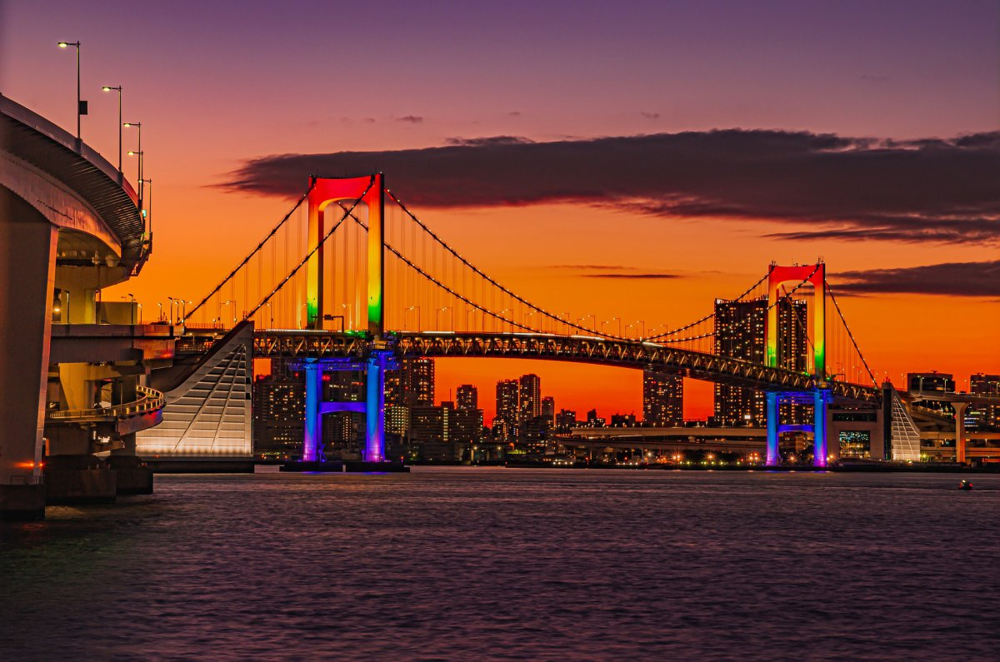
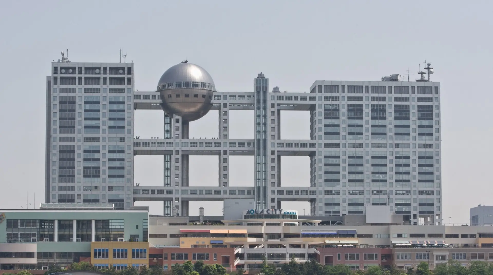
這裡不要亂逛。服飾先鎖定符合預算的店，再上 5F 看 Godzilla Store。coen 目前不在 DiverCity 官方店舖名單內。
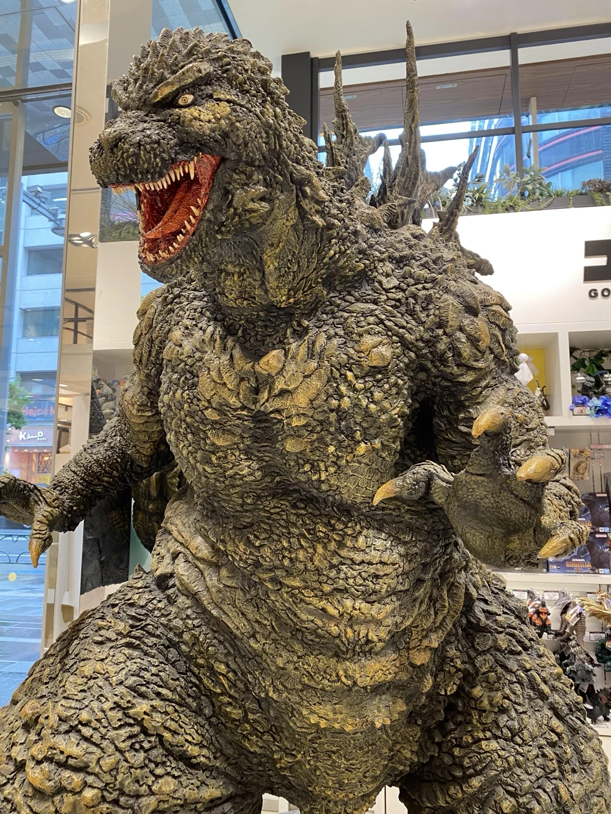
若團體在 DiverCity 留 90 分鐘以上，可考慮月島文字燒；若只有約 60 分鐘，先保護服飾、Godzilla Store 與必要採買，晚餐不要坐太久。
SOFUBI / ART / CAMERA / SWEETS / FASHION
核心：08:00 鮨山治・11:10/12:00 KAGEMARU・治一郎・BUTTER・國立新美術館 Leonardo。美術館後走 高輪夜景 → 澀谷藝術／哥吉拉 → 新宿鬼塚虎 → 原宿 Harry Potter → 鳥茂。RAFLUM 依活動存續決定；辻田只在不用排隊時啟動；Kenyan 改為 5–10 分鐘外帶任務，不刪除。
東京住宿尚未定案；此段交通待飯店確認後重算。08:00 鮨山治預約本身不變。
約 10–12 分鐘。目的地：VORT銀座イーストIII 1F，東京都中央区銀座4-14-8。
築地後步行前往。第一杯精品咖啡。
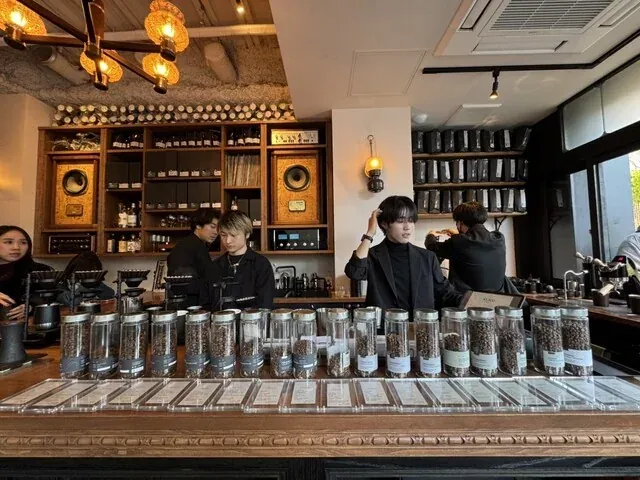
建議直接步行，約 12–15 分鐘；10:45 前抵達有樂町站前區域。
到館後直接找電梯上 8F Event Space，先處理 11:10 入場。
兩場 KAGEMARU 中間快速處理。RAFLUM 有去時 Lemon-sha 抓 10–15 分鐘；RAFLUM 無活動時可完整抓 20–25 分鐘。
已購票 · 先行票 mini sofubi #2。第二場結束後直接判斷辻田是否值得停。
WAIT ≤ 10 MIN → EAT / WAIT > 10 MIN → SKIP。 拉麵想吃，但沒有資格拖慢下午 Leonardo。若吃辻田，後面治一郎與 BUTTER 仍保留。
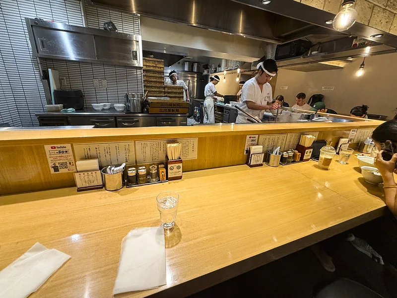
有樂町活動範圍旁的哥吉拉地標。只有第二場 KAGEMARU 結束後時間漂亮才收；不為它延誤丸之內與 Leonardo。
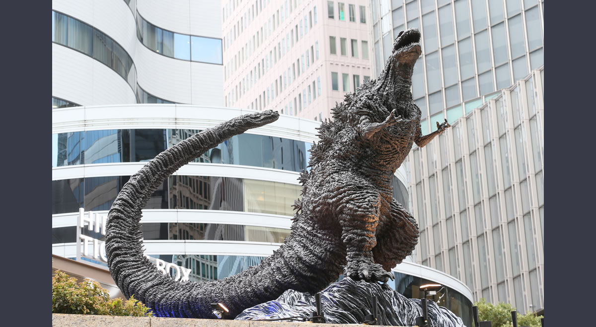
辻田 SKIP 時直接走，目標盡量把治一郎與 BUTTER 往前推；若有吃辻田，兩站停留時間縮短但不刪。
有樂町 → KITTE 的途中順手穿越。 不另外排參觀時間；如果動線剛好經過玻璃棟，就用 3–5 分鐘看巨大鋼骨與船型中庭。
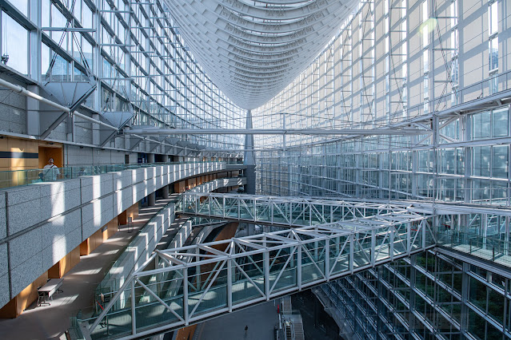
治一郎／BUTTER 結束後直接前往，不再塞其他店。
二重橋前 C10 → 乃木坂 C05。
6 號出口與國立新美術館直結。
DAY 04 最高優先。 目標比舊版提前 15–30 分鐘進場。展覽超過 50 件 Louvre 收藏，Leonardo《女性の肖像（美しきフェロニエール）》為首次來日；10/26 週一正常開館 10:00–18:00。
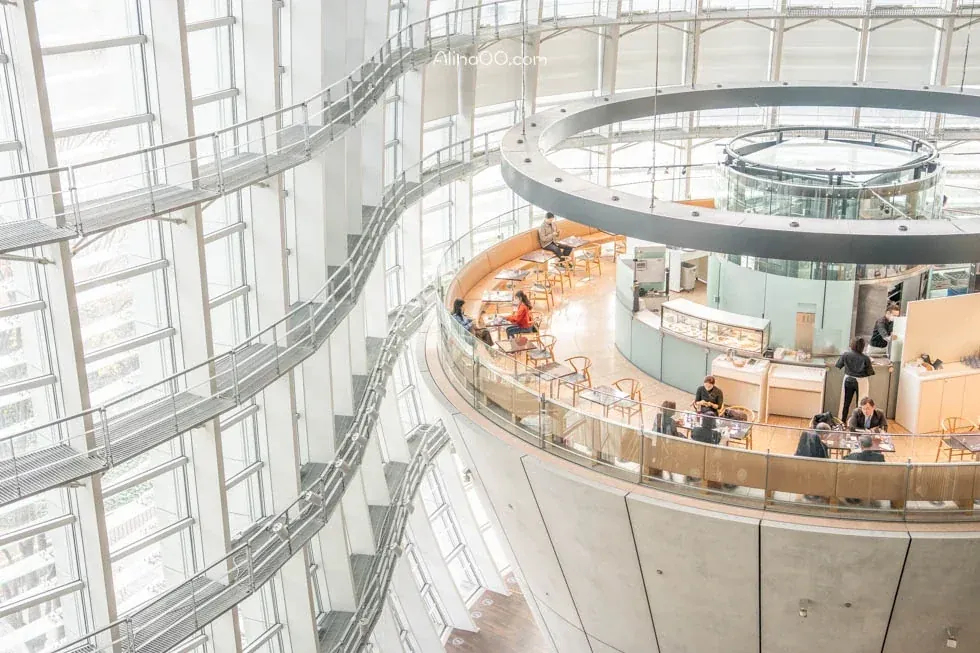
由 6 號出口回站內。若展覽看到 16:45 也沒關係；不要為後段景點壓縮 Leonardo。
乃木坂 → 日比谷，地下步行至 JR 有樂町後轉山手線／京濱東北線往品川方向，到高輪ゲートウェイ。
改札後依 NEWoMan / North 指標前進。
白色大理石、低彩度、巨大量體。Leonardo 看完仍有餘裕才去；這是你會比較有興趣的公共藝術類型，但優先級仍低於國立新美術館。
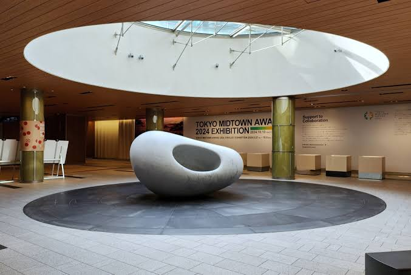
這趟最適合正式逛的 MUJI。 就在 NEWoMan TAKANAWA North 2–3F：2F 衣料、3F 生活雜貨與食品。你本來就要上 North 4F 喝奶茶，再去 28F 夜景，所以不用增加任何交通。
NEWoMan TAKANAWA North → 4F MILK TEA SERVICE → LUFTBAUM 28F → 公共庭園夜景。 不用買 SHIBUYA SKY；高輪先完成免費高空景觀。
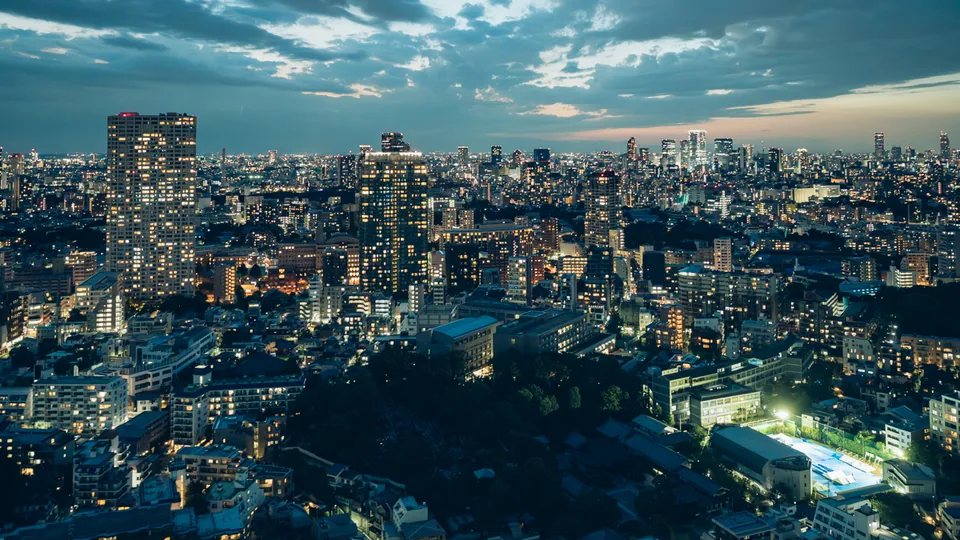
MILK TEA SERVICE / BEAMS CULTUART。買奶茶、快速看設計選物。
回共用動線，找「LUFTBAUM 28F・29F」指標，搭高層電梯上樓。
主目標：翠の庭／山吹の庭。約 150m 高空公共空間，拍城市夜景 15–20 分鐘。
下樓回高輪ゲートウェイ，直接前往澀谷。
高輪ゲートウェイ → 渋谷。抵達後先進 SHIBUYA SCRAMBLE SQUARE，不上 SHIBUYA SKY。
步行約 10–12 分鐘。直接上 6F，不在其他樓層失速。
Kenyan 外帶完成後立即出發。目標 19:30 左右到新宿，保留鬼塚虎至少 25–30 分鐘。
往東口／中央東口方向，直接前往黃色外牆的 Onitsuka Tiger 新宿。
世界最大 Global Flagship ★★★★★。 4 個樓層，完整涵蓋 Heritage、Contemporary、THE ONITSUKA 與 NIPPON MADE；至少留 25–30 分鐘。
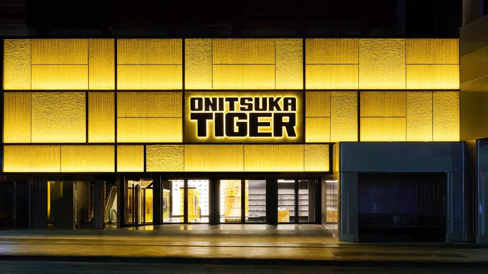
鬼塚虎 20:00 關門後直接往原宿。目標 20:15 左右抵達 Harry Potter Shop；不要在途中加站。
日本首間官方旗艦店 · KEEP。 禁じられた森主題；1F 原宿限定商品／學院系列，2F MinaLima、魔杖、Honeydukes 與 Butterbeer。現在不需要線上整理券，直接入店；若現場壅塞仍可能實施入場管制。
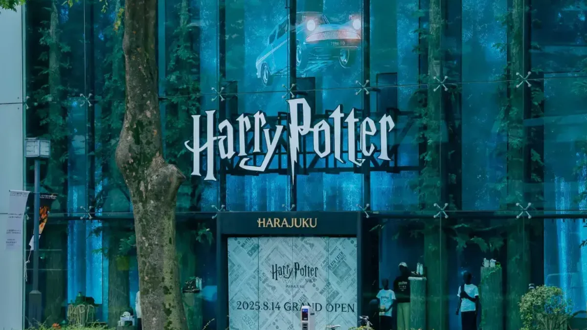
Harry Potter 結束後回新宿。若想買成城石井，可在新宿站 LUMINE 2 1F 快速補貨；只抓 5–10 分鐘。
原宿からJRで新宿へ戻るなら LUMINE 2 が最優先。 LUMINE 2 店は南口の改札内なので、電車を降りて改札を出る前に寄れる。買い逃したら、改札外の LUMINE 1 B2F をバックアップに。
新宿晚間主地標。鳥茂前後視實際時間收；不要求看到整點演出，夜間歌舞伎町＋哥吉拉頭本身就是拍攝目標。
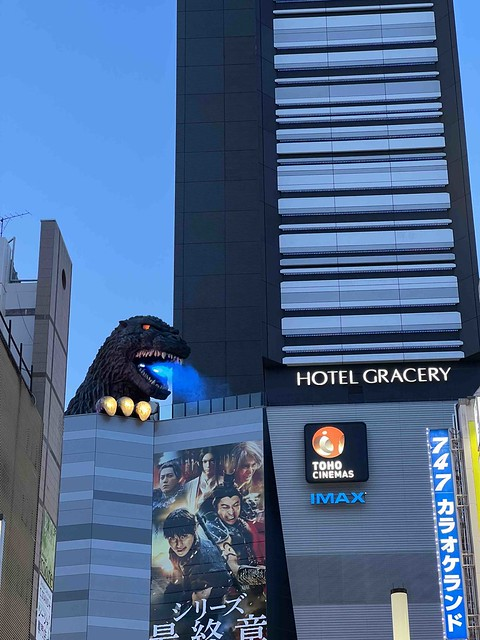
東京住宿尚未定案；飯店確定後再補新宿／宵夜店到飯店的末班車、Taxi Driver Card 與水果／超商採買點。
SMALL WORLDS / SEIKO / BORDERLESS
固定：SMALL WORLDS EVA・本とさや午餐・SEIKO・Blue Bottle 清澄白河・18:00 RistoPizza・奈良美智《東京の森の子》・20:00 teamLab・東京鐵塔。Blue Bottle 保留；若麻布台抵達偏晚，優先 SKIP 中村藤吉或 34F 展望。
約 10 分鐘；中央改札進站。
大森 → 品川。
品川 → 澀谷。
かつお食堂官方建議 JR 新南口方向，出站後往櫻丘方向，於「桜丘郵便局」左轉，再約 1 分鐘到 GranDuo渋谷 B1F。因澀谷站工程可能調整，現場以「新南口／桜丘」標示為準。
早餐 · 鰹節ごはん
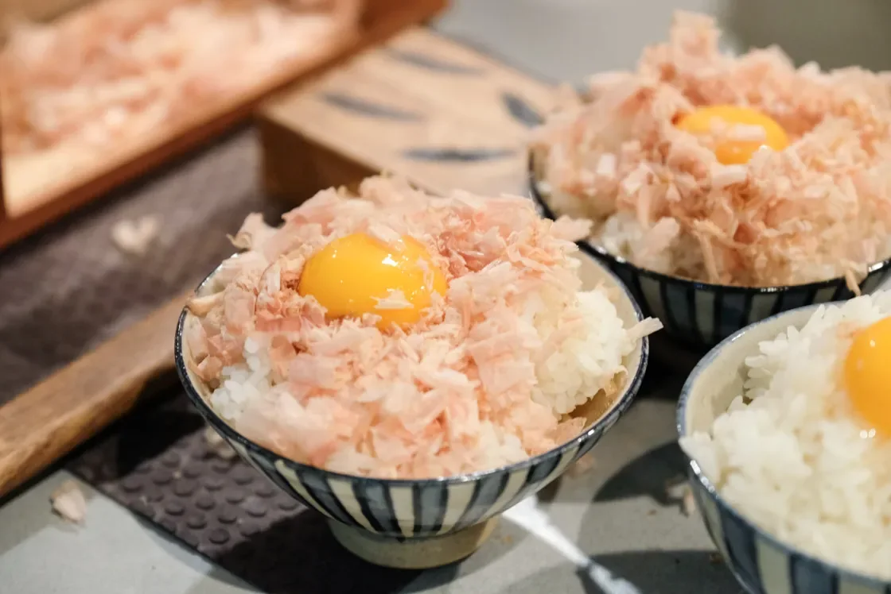
這段直接搭 Taxi，避免走回澀谷站再繞中目黑。上車可直接給司機日文地址：東京都目黒区青葉台2-19-23。
官方標示步行約 14 分鐘。沿目黑川回站。
中目黑 → 澀谷。
澀谷 → 找「新木場方面」列車 → 國際展示場。若班次不直通，在大崎依「りんかい線」指標轉車。
官方標示步行約 9 分鐘。另一個最近站是百合海鷗「有明テニスの森」，步行約 3 分鐘。
官方標示約 3 分鐘。
有明テニスの森 → 豐洲 U16。
豐洲 Y22 → 銀座一丁目 Y19。
地下／地面步行約 7–10 分鐘，依銀座線標示前進。
銀座 → 田原町 G18。
官方標示約 7 分鐘。店址：東京都台東区西浅草3-1-9。
約 10–12 分鐘。龜十靠近雷門一帶，這段不要搭車。
你去龜十本來就會進雷門一帶。不用增加停留，只要經過時拍。
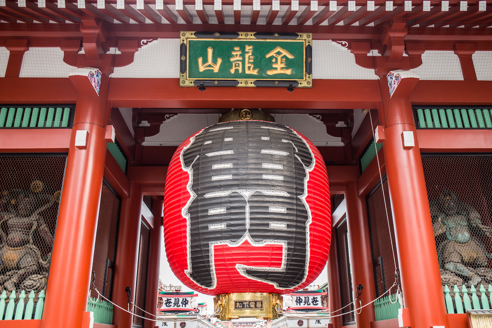
約 8–10 分鐘。FUGLEN 位於淺草西側、淺草寺西入口附近。
約 10–12 分鐘；往隅田川／東武百貨方向。
淺草 TS01 → とうきょうスカイツリー TS02，1 站約 3 分鐘。
兩個改札出站都能立即進 Tokyo Solamachi。TiCTAC 在 3F East Yard 8番地。
Solamachi 與押上站直結；B3／A2 是館方標示的直結出口。
押上 Z14 → 清澄白河 Z11，3 站。
往平野方向步行約 8–10 分鐘至東京都江東区平野1-4-8。
不是刪除 Blue Bottle，而是控制離店時間。17:10 前喝完並出發，後面麻布台行程才不會撞到 18:00 RistoPizza。
清澄白河 Z11 → 水天宮前 Z10。
跟「人形町／日比谷線」標示走地下連絡通道，不用出站重新刷卡。
人形町 H14 → 神谷町 H05。
5 號出口與麻布台 Hills 直結。teamLab 官方也指示由此沿地下通路前往 Garden Plaza B，無須先上地面。
MATCHA STOP · 15 MIN｜Garden Plaza B B1F。TO-GO 型態，直接喝一杯抹茶，不另外跨區。
Azabudai Hills Tower Plaza 3F · 2 人 · 已預約。
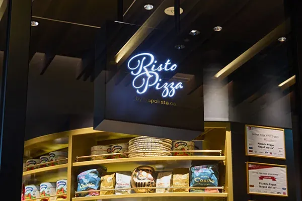
AZABUDAI ART WALK｜RistoPizza 後直接到中央廣場。這站正式取代原本看不懂的 BUFFER，抓 10–15 分鐘拍作品與麻布台夜景。
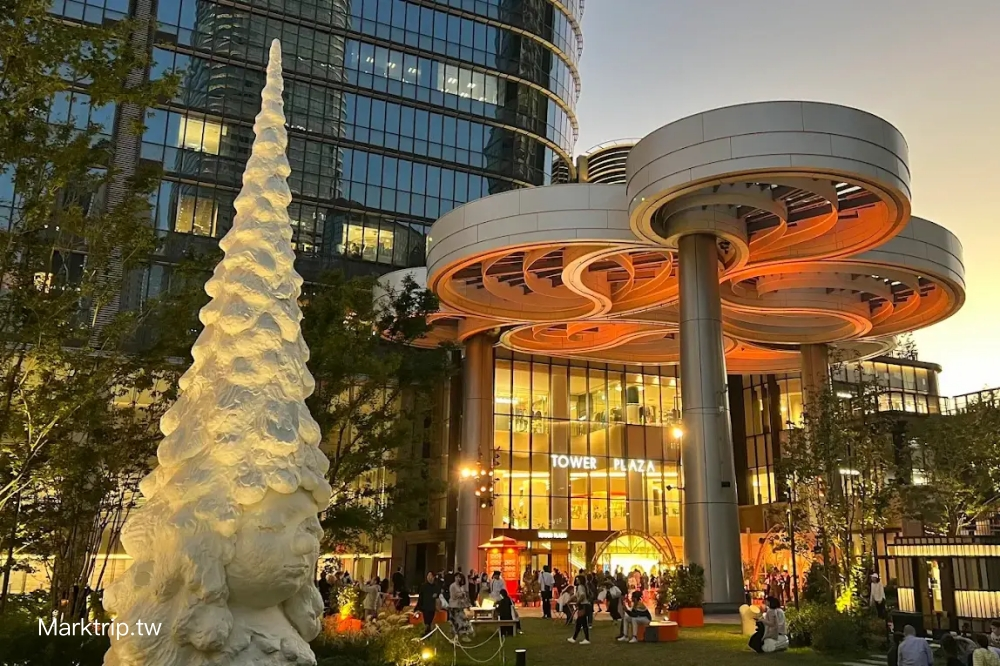
約 15–20 分鐘。以東京鐵塔作視覺基準往南東方向走；夜拍主線：塔下 → 赤羽橋交差點 → 芝公園。
只保留三個順路機位：城市壓縮、芝公園對稱、增上寺古今構圖。不要為了拍照繞遠。
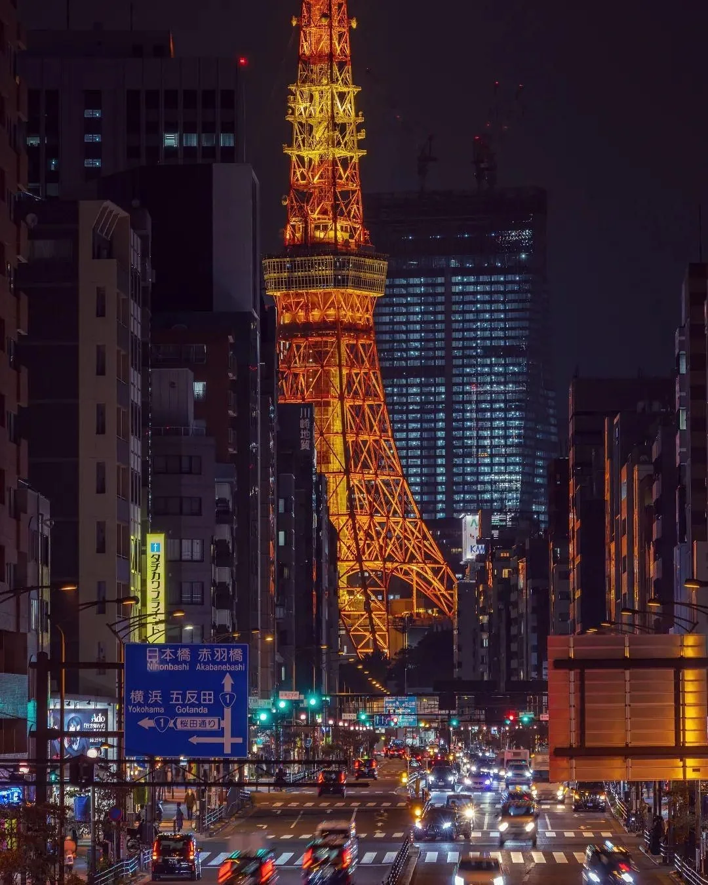
東京鐵塔拍完才決定；不為宵夜提早結束 teamLab 或夜拍。一風堂六本木與麺匠竹虎已移除。
約 10–12 分鐘。
赤羽橋 E21 → 大門 E20，1 站。
跟「浅草線」指標轉乘。
優先搭直通京急線的列車至大森海岸。若列車終點不同，依站內顯示於泉岳寺或品川轉京急本線。
住宿確定後再補東京鐵塔／宵夜後的最終回程。
DEPARTURE DAY
飯店 → 成田機場 → 13:55 FD235 → 17:05 高雄。飯店與集合時間確定後再補最後一段交通。
團體送機。當天不安排額外購物支線。
REFERENCE / SYSTEM DATA
只收你會有興趣、而且在既有路線上或只需極小繞路的城市地標。看到照片就知道現場要找什麼；不為打卡破壞主行程。
只收錄你這趟實際路線上或極小繞路的成城石井。DiverCity 舊店已閉店，不列入。
只排真正能接上既有行程的店。主逛不增加新車站；備用店只在有餘裕時啟動。
一般 Starbucks 用。焙茶＆クラシックティーラテ：少糖＋少冰。皮卡丘限定飲品は 10/08 終了のため参考表示のみ。
店員にそのまま見せる用。型番と写真をフルスクリーン表示できます。

標有 Taxi Backup 的路段會出現 OPEN UBER。現在改用 Uber 官方 Universal Link：上車點使用目前位置，目的地以座標＋名稱＋完整地址傳入。測試時只確認目的地是否出現，不要按下叫車確認。
目前所有 HOTEL → 景點與景點 → HOTEL 路線先保留既有草案；飯店確定後只重算這些腿段，不動白天主行程。
這趟會混用 JR、京急、Tokyo Metro、都營、東武、百合海鷗，不建議為了回本而綁一日券。